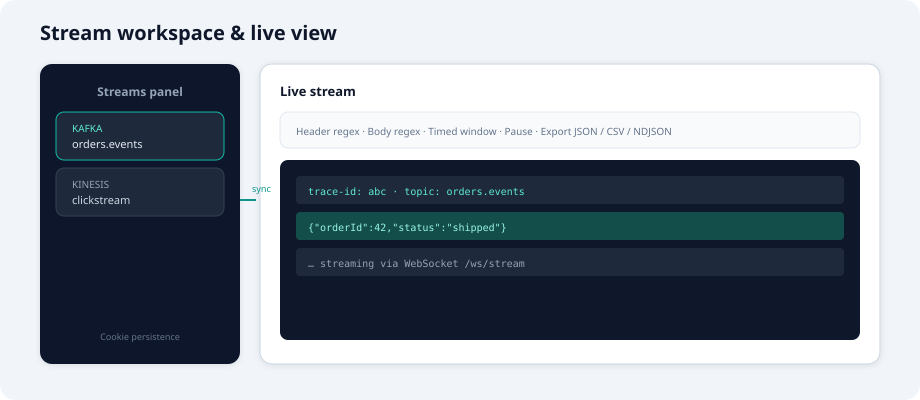

Architecture
Components, planes, modules, and how requests flow through the platform.

Design principles
- Use what is required — Maven profiles and
enabled-protocolslimit JAR size and UI surface. - Contract-first APIs — OpenAPI per stream; generated controllers with delegate implementations.
- Separation of concerns — control plane for registration and UI metadata; data plane for broker I/O.
- Provider SPI — each protocol is an isolated
eventore-provider-*module.
Control plane vs data plane

| Control plane | Data plane |
|---|---|
| Provider register / deregister | Publish, subscribe, consume |
GET /api/v1/control/plane | /api/v1/connections/... |
| UI cascade (which tabs to show) | WebSocket /ws/stream |
| OpenAPI catalog per deployment | Inspect, Kafka admin APIs |
| No TCP to brokers | All broker clients live here |
Backend modules
eventore-core Domain, SPI, control/dataplane registries
eventore-api-codegen OpenAPI → Spring controllers (per stream)
eventore-provider-* One module per protocol (connector + inspector)
eventore-server REST, WebSocket, security, delegatesFrontend application
React + React Query. Routes:
/— Dashboard (deployment mode, control plane summary)/connections— CRUD and validation/browse— destinations + stream inspector/stream— live view panel
The side Streams panel persists subscriptions in cookies via StreamWorkspaceContext.

Provider registration flow
- Spring Boot loads
StreamProviderbeans from enabled provider JARs. - On startup,
ControlPlaneBootstrapregisters each allowed protocol. ControlPlaneCoordinatorattaches the provider toDataPlaneRegistry.GET /configreturnscontrolPlane.uiCascadefor the UI.- Admins may
POST /control/providers/{protocol}/registeror deregister at runtime (ADMIN).
API surfaces (generated + manual)
| Surface | Path prefix | Plane |
|---|---|---|
| Core | /api/v1/config, connections, publish | Mixed |
| Control | /api/v1/control/* | Control |
| Inspect | .../inspect/* | Data |
| Kafka | .../kafka/* | Data |
| Stream | /ws/stream | Data |